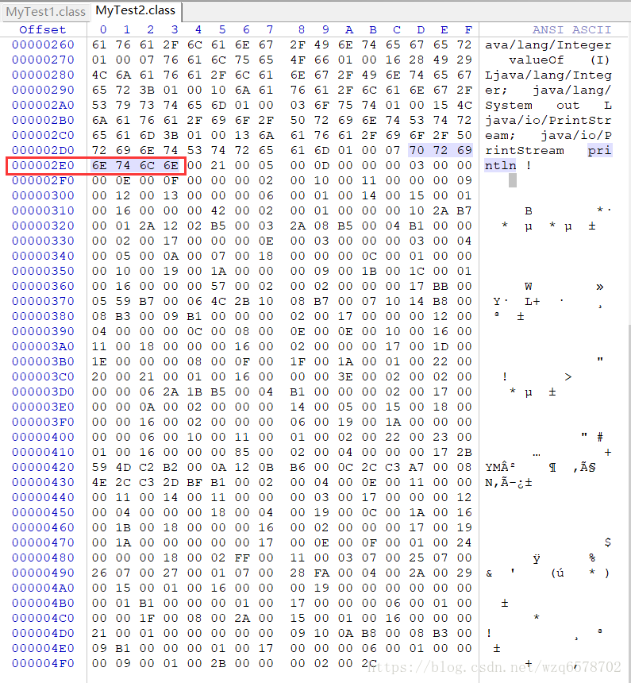

jvm原理（28）synchronized关键字所生成的字节码详细分析&&复杂字节码文件的分析过程
前边我们解析了一个字节码文件，现在我们做一个比较复杂的字节码文件的解析，程序如下：
1 | package com.twodragonlake.jvm.bytecode; |
注意方法setX是私有的，我们这个时候使用javap -verbose 反编译的字节码不会展示私有方法，命令需要加上参数 -p:
javap -verbose -p com.twodragonlake.jvm.bytecode.MyTest2
私有的setX出来的字节码：
1 | private void setX(int); |
然后我们在setX方法上加上synchronized关键字，反编译结果：
1 | private synchronized void setX(int); |
synchronized 关键字是为了多线程并发加锁，按照正常的套路应该会出现monitorenter和monitorexit但是反编译出来的结果并没有，只是在方法的声明上边加了ACC_SYNCHRONIZED的标记，这种synchronized的使用方式，加在方法上边，默认是对当前对象加锁，还有一种是对代码块加锁，然后指定加锁对象是指定的一个对象，比如：
1 | private void test(String str){ |
我们反编译之后：
1 | private void test(java.lang.String); |
这个时候我们想要的monitorenter 和 monitorexit出现了。
monitorenter 入口只有一个，但是monitorexit的出口有多个，因为程序异常也会执行monitorexit
synchronized 除了修饰实例方法和代码块之外还可以修饰静态方法，修饰静态方法的时候是给Class加锁：
1 | private synchronized static void tes2(){ |
反编译如下：
1 | private static synchronized void tes2(); |
这个时候 只会在方法的标记一下 ACC_SYNCHRONIZED，因为synchronized 属于class上锁。
俺么接下来我们就如下的完整的字节码文件进行解析：
1 | package com.twodragonlake.jvm.bytecode; |
拿到反编译的1进制文件：
首先是魔数：CAFEBABE
版本号+小版本号：00000034
常量池2+n个字节 ： 0046 常量个数：70 （实际69个，其中一个是保留的）
第一个常量：0A 是10 代表方法引用，00 0D 是第13号常量，00 2D是第45 号常量，最终汇总出来：#13.#45 // java/lang/Object.”
第二个常量：08 是字符串索引，00 2E是46号常量 字符串：welcome。
第三个常量： 09 方法引用，00 05 是5号常量【#5 = Class #49 // com/twodragonlake/jvm/bytecode/MyTest2】；
00 2f 是47号常量：#47 = NameAndType #14:#15 // str:Ljava/lang/String;所以3号常量是：
// com/twodragonlake/jvm/bytecode/MyTest2.str:Ljava/lang/String;
第四个常量：09 方法引用，00 05 是5号常量【#5 = Class #49 // com/twodragonlake/jvm/bytecode/MyTest2】; 00 30 是48号常量
【#48 = NameAndType #16:#17 // x:I】 ，所以四号常量是：【#5.#48 // com/twodragonlake/jvm/bytecode/MyTest2.x:I】
第五个常量： 07 是类的引用，00 31 是49号常量 【#49 = Utf8 com/twodragonlake/jvm/bytecode/MyTest2】；
第六个常量：0A 是方法引用，00 05 是5号常量【#5 = Class #49 // com/twodragonlake/jvm/bytecode/MyTest2】；
00 2D 是45号常量【#45 = NameAndType #20:#21 // <init>:()V】 所以6号常量是：
【#6 = Methodref #5.#45 // com/twodragonlake/jvm/bytecode/MyTest2.<init>:()V】
第七个常量：0A 是 方法引用 ，00 05 ， 00 32 分别是5号和50号常量： 【#7 = Methodref #5.#50 // com/twodragonlake/jvm/bytecode/MyTest2.setX:(I)V】
第八个常量：0A 是方法引用，00 33 00 34 分别是51和52号常量：【#8 = Methodref #51.#52 // java/lang/Integer.valueOf:(I)Ljava/lang/Integer;】
第九个常量：09 是字段引用，00 05 00 35 分别是5号和53号常量：【#9 = Fieldref #5.#53 // com/twodragonlake/jvm/bytecode/MyTest2.in:Ljava/lang/Integer;】
第十个常量：09 是字段引用，00 36 00 37 分别是54和55号常量：【#10 = Fieldref #54.#55 // java/lang/System.out:Ljava/io/PrintStream;】
第十一个常量：08字符串引用，00 38 是56号常量：【 #56 = Utf8 hello world】
是十二号常量：0A是方法引用，00 39 和 00 3A分别是57号和58号常量：【#12 = Methodref #57.#58 // java/io/PrintStream.println:(Ljava/lang/String;)V】
第十三号常量：07 是类引用，00 3B是59号常量：【#13 = Class #59 // java/lang/Object】
第十四号常量：01 字符串信息，00 03 是三个utf-8字节码长度，73 74 72 是对应的utf编码的 str。
第十五号常量：01是字符串引用，00 12 是18个utf-8编码的长度， 4C6A6176612F6C616E672F537472696E673B 是 【Ljava/lang/String;】字符串
第十六号常量：01 是字符串 引用，00 01 是一个长度，78 是字符串x。
第十七号常量：01 是字符串，00 01一个长度，49是I。
第十八号常量：01 是字符串，00 02是2个长度，69 6E in
第十九号常量：01是字符串，00 13 是19个长度，4C6A6176612F6C616E672F496E74656765723B 是Ljava/lang/Integer;
第二十号常量：01 是字符串，00 06是6个长度，3C696E69743E 是 <init>
第二十一号常量：01 是字符串， 00 03 是三个长度，28 29 56是()V
第二十二号常量：01是字符串， 00 04 是4个长度，436F6465 是 Code
第二十三号常量：01 是字符串，00 0F是15个长度，4C696E654E756D6265725461626C65 是LineNumberTable
第二十四号常量：01是字符串，00 12 是18个长度，4C6F63616C5661726961626C655461626C65 是LocalVariableTable
第二十五号常量：01 是字符串，00 04 是四个长度， 74 68 69 73 是字符串：this
第二十六号常量：01 是字符串 00 28 是40个长度，4C636F6D2F74776F647261676F6E6C616B652F6A766D2F62797465636F64652F4D7954657374323B 是字符串：Lcom/twodragonlake/jvm/bytecode/MyTest2;
第二十七号常量：01是字符串，00 04 是四个长度，6D 61 69 6E是字符串：main
第二十八号常量：01是字符串 ，0016 是38个长度，285B4C6A6176612F6C616E672F537472696E673B2956 是字符串：([Ljava/lang/String;)V
第二十九号常量：01 是字符串，00 04 是四个长度，61 72 67 73 字符串args
第三十号常量：01是字符串，00 13 是18个长度，5B4C6A6176612F6C616E672F537472696E673B 是字符串[Ljava/lang/String;
第三十一号常量：01是字符串，00 07是7个长度，6D795465737432 是字符串：myTest2
第三十二号常量：01 是字符串，00 04 是4个长度，73 65 74 58是字符串：setX
第三十三号常量：01是字符串 00 04是4个长度，28 49 29 56 是字符串：(I)V
第三十四 号常量：01是字符串，00 04 是四个长度，74 65 73 74 是字符串：test
第三十五个常量：01 是字符串，00 15 是21个长度，284C6A6176612F6C616E672F537472696E673B2956 是字符串：(Ljava/lang/String;)V
第三十六常量：01是字符串， 00 0D，是13个长度，537461636B4D61705461626C65 是字符串：StackMapTable
第三十七个常量：07 是类引用信息，00 31 是49号常量【#49 = Utf8 com/twodragonlake/jvm/bytecode/MyTest2】；
第三十八号常量：07是类信息，00 3C 60号常量 【#38 = Class #60 // java/lang/String】
第三十九号常量：07是类信息，00 3B是59号常量：【 #39 = Class #59 // java/lang/Object】
第四十号常量：07是类信息，00 3D是61号常量【#40 = Class #61 // java/lang/Throwable】
第四十一号常量：01是字符串，00 04 是四个长度，74 65 73 32 是字符串test2
第四十二号常量：01 是字符串，00 08 是8个长度，3C636C696E69743E 是字符串 【<clinit>】
第四十三号常量：01是字符串，00 0A，是10个长度，536F7572636546696C65 是字符串：【SourceFile】
第四十四号常量：01是字符串。00 0C 是12个长度，4D7954657374322E6A617661 是字符串：【MyTest2.java】
第四十五号常量：0C 名称和类型的引用，00 14 是20号常量，00 15 是21号常量：【#20:#21 // "<init>":()V】
第四十六号常量：01是字符串，00 07 是7个长度，57656C636F6D65 是字符串：【Welcome】
第四十七号常量：0C 名称和类型的引用,00 0E 是14号常量，00 0F是15号常量，所以汇总是：【#47 = NameAndType #14:#15 // str:Ljava/lang/String;】
第四十八号常量：0C是名称和类型的引用，00 10 00 11 分别是16和17号常量：【#48 = NameAndType #16:#17 // x:I】
第四十九号常量：01 是字符串，00 26是38个长度，636F6D2F74776F647261676F6E6C616B652F6A766D2F62797465636F64652F4D795465737432 是字符串：
【com/twodragonlake/jvm/bytecode/MyTest2】
第五十号常量：0C是名称和类型的引用，00 20 是32号常量，0021是33号常量，汇总：【#50 = NameAndType #32:#33 // setX:(I)V】
第五十一号常量：07 类引用信息，00 3E是62号常量：汇总：【#51 = Class #62 // java/lang/Integer】
第五十二号常量：0C是名称和类型的引用， 00 3F是63号常量，00 40是64号常量，汇总：【#52 = NameAndType #63:#64 // valueOf:(I)Ljava/lang/Integer;】
第五十三号常量：0C 是名称和类型的引用，00 12是18号常量，00 13是19号常量，汇总【#53 = NameAndType #18:#19 // in:Ljava/lang/Integer;】
第五十四号常量：07是类引用信息，0041是6号常量：【#54 = Class #65 // java/lang/System】
第五十五号常量：0C 是 名称和类型的引用， 0042 是66号常量，0042 是67号常量汇总；【#55 = NameAndType #66:#67 // out:Ljava/io/PrintStream;】
第五十六号常量：01是字符串，00 0B 是11个长度，68656C6C6F20776F726C64是字符串：【hello world】
第五十七号常量：07 是类引用信息，00 44 是68号常量：【#57 = Class #68 // java/io/PrintStream】
第五十八号常量：0C 是 名称和类型的引用， 00 45 是69号常量，00 23是35号常量，汇总：【#58 = NameAndType #69:#35 // println:(Ljava/lang/String;)V】
第五十九号常量：01 是字符串，00 10 是16个长度，6A6176612F6C616E672F4F626A656374 字符串是：【java/lang/Object】
第六十号常量：01 是字符串，00 10 是1个长度，6A6176612F6C616E672F537472696E67 是字符串 【java/lang/String】
第六十一号常量：01 是字符串，00 13是35个长度，6A6176612F6C616E672F5468726F7761626C65 是字符串：java/lang/Throwable
第六十二号常量：01是字符串，00 11 是17个长度，6A6176612F6C616E672F496E7465676572 是字符串：java/lang/Integer
第六十三号常量：01 是字符串， 00 07是7个长度，76616C75654F66 是字符串：valueOf
第六十四号常量：01时候字符串，00 16是22个长度，2849294C6A6176612F6C616E672F496E74656765723B 是字符串：(I)Ljava/lang/Integer;
第六十五号常量：01 是字符串，00 10是16个长度，6A6176612F6C616E672F53797374656D是字符串：java/lang/System
第六十六号常量：01 是字符串，00 03 是三个长度，6F 75 74 是字符串：out
第六十七号常量：01 是字符串， 00 15是21个长度，4C6A6176612F696F2F5072696E7453747265616D3B 是字符串：Ljava/io/PrintStream;
第六十八号常量：01是字符串，00 13是19个长度，6A6176612F696F2F5072696E7453747265616D 是字符窜：java/io/PrintStream
第六十九号常量：01是字符串，00 07 是7个长度，7072696E746C6E 是字符串：println
为此常量池到此结束：
